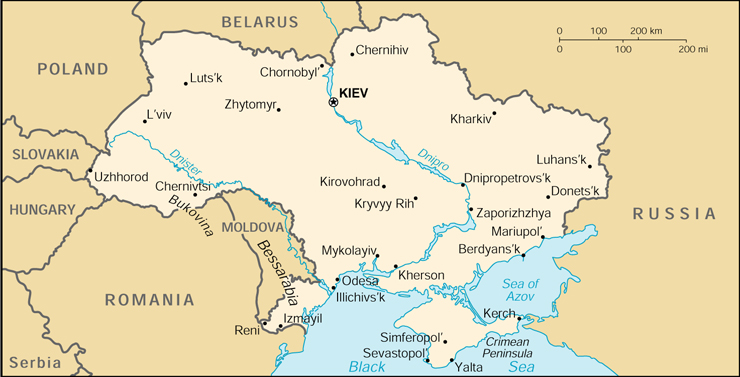

|
Ukraine | |
| Introduction Geography People Government Economy Communications Transportation Military Transnational Issues | ||
|  | ||
| Ukraine | Introduction | Top of Page |
| Background: | Richly endowed in natural resources, Ukraine has been fought over and subjugated for centuries; its 20th-century struggle for liberty is not yet complete. A short-lived independence from Russia (1917-1920) was followed by brutal Soviet rule that engineered two artificial famines (1921-22 and 1932-33) in which over 8 million died, and World War II, in which German and Soviet armies were responsible for some 7 million more deaths. Although independence was attained in 1991 with the dissolution of the USSR, true freedom remains elusive as many of the former Soviet elite remain entrenched, stalling efforts at economic reform, privatization, and civic liberties. |
| Ukraine | Geography | Top of Page |
| Location: | Eastern Europe, bordering the Black Sea, between Poland and Russia |
| Geographic coordinates: | 49 00 N, 32 00 E |
| Map references: | Commonwealth of Independent States |
| Area: |
total:
603,700 sq km
land: 603,700 sq km water: 0 sq km |
| Area - comparative: | slightly smaller than Texas |
| Land boundaries: |
total:
4,558 km
border countries: Belarus 891 km, Hungary 103 km, Moldova 939 km, Poland 428 km, Romania (south) 169 km, Romania (west) 362 km, Russia 1,576 km, Slovakia 90 km |
| Coastline: | 2,782 km |
| Maritime claims: |
continental shelf:
200-m or to the depth of exploitation
exclusive economic zone: 200 NM territorial sea: 12 NM |
| Climate: | temperate continental; Mediterranean only on the southern Crimean coast; precipitation disproportionately distributed, highest in west and north, lesser in east and southeast; winters vary from cool along the Black Sea to cold farther inland; summers are warm across the greater part of the country, hot in the south |
| Terrain: | most of Ukraine consists of fertile plains (steppes) and plateaus, mountains being found only in the west (the Carpathians), and in the Crimean Peninsula in the extreme south |
| Elevation extremes: |
lowest point:
Black Sea 0 m
highest point: Hora Hoverla 2,061 m |
| Natural resources: | iron ore, coal, manganese, natural gas, oil, salt, sulfur, graphite, titanium, magnesium, kaolin, nickel, mercury, timber, arable land |
| Land use: |
arable land:
58%
permanent crops: 2% permanent pastures: 13% forests and woodland: 18% other: 9% (1993 est.) |
| Irrigated land: | 26,050 sq km (1993 est.) |
| Natural hazards: | NA |
| Environment - current issues: | inadequate supplies of potable water; air and water pollution; deforestation; radiation contamination in the northeast from 1986 accident at Chornobyl' Nuclear Power Plant |
| Environment - international agreements: |
party to:
Air Pollution, Air Pollution-Nitrogen Oxides, Air Pollution-Sulphur 85, Antarctic-Marine Living Resources, Antarctic Treaty, Biodiversity, Climate Change, Endangered Species, Environmental Modification, Hazardous Wastes, Law of the Sea, Marine Dumping, Ozone Layer Protection, Ship Pollution, Wetlands
signed, but not ratified: Air Pollution-Persistent Organic Pollutants, Air Pollution-Sulphur 94, Air Pollution-Volatile Organic Compounds, Antarctic-Environmental Protocol, Climate Change-Kyoto Protocol |
| Geography - note: | strategic position at the crossroads between Europe and Asia; second-largest country in Europe |
| Ukraine | People | Top of Page |
| Population: | 48,760,474 (July 2001 est.) |
| Age structure: |
0-14 years:
17.3% (male 4,310,158; female 4,127,677)
15-64 years: 68.57% (male 15,965,079; female 17,468,035) 65 years and over: 14.13% (male 2,275,004; female 4,614,521) (2001 est.) |
| Population growth rate: | -0.78% (2001 est.) |
| Birth rate: | 9.31 births/1,000 population (2001 est.) |
| Death rate: | 16.43 deaths/1,000 population (2001 est.) |
| Net migration rate: | -0.63 migrant(s)/1,000 population (2001 est.) |
| Sex ratio: |
at birth:
1.05 male(s)/female
under 15 years: 1.04 male(s)/female 15-64 years: 0.91 male(s)/female 65 years and over: 0.49 male(s)/female total population: 0.86 male(s)/female (2001 est.) |
| Infant mortality rate: | 21.4 deaths/1,000 live births (2001 est.) |
| Life expectancy at birth: |
total population:
66.15 years
male: 60.62 years female: 71.96 years (2001 est.) |
| Total fertility rate: | 1.29 children born/woman (2001 est.) |
| HIV/AIDS - adult prevalence rate: | 0.96% (1999 est.) |
| HIV/AIDS - people living with HIV/AIDS: | 240,000 (1999 est.) |
| HIV/AIDS - deaths: | 4,000 (1999 est.) |
| Nationality: |
noun:
Ukrainian(s)
adjective: Ukrainian |
| Ethnic groups: | Ukrainian 73%, Russian 22%, Jewish 1%, other 4% |
| Religions: | Ukrainian Orthodox - Moscow Patriarchate, Ukrainian Orthodox - Kiev Patriarchate, Ukrainian Autocephalous Orthodox, Ukrainian Catholic (Uniate), Protestant, Jewish |
| Languages: | Ukrainian, Russian, Romanian, Polish, Hungarian |
| Literacy: |
definition:
age 15 and over can read and write
total population: 98% male: 100% female: 97% (1989 est.) |
| Ukraine | Government | Top of Page |
| Country name: |
conventional long form:
none
conventional short form: Ukraine local long form: none local short form: Ukrayina former: Ukrainian National Republic, Ukrainian State, Ukrainian Soviet Socialist Republic |
| Government type: | republic |
| Capital: | Kiev (Kyyiv) |
| Administrative divisions: |
24 oblasti (singular - oblast'), 1 autonomous republic* (avtomnaya respublika), and 2 municipalities (mista, singular - misto) with oblast status**; Cherkas'ka (Cherkasy), Chernihivs'ka (Chernihiv), Chernivets'ka (Chernivtsi), Dnipropetrovs'ka (Dnipropetrovs'k), Donets'ka (Donets'k), Ivano-Frankivs'ka (Ivano-Frankivs'k), Kharkivs'ka (Kharkiv), Khersons'ka (Kherson), Khmel'nyts'ka (Khmel'nyts'kyy), Kirovohrads'ka (Kirovohrad), Kyyiv**, Kyyivs'ka (Kiev), Luhans'ka (Luhans'k), L'vivs'ka (L'viv), Mykolayivs'ka (Mykolayiv), Odes'ka (Odesa), Poltavs'ka (Poltava), Avtonomna Respublika Krym* (Simferopol'), Rivnens'ka (Rivne), Sevastopol'**, Sums'ka (Sumy), Ternopil's'ka (Ternopil'), Vinnyts'ka (Vinnytsya), Volyns'ka (Luts'k), Zakarpats'ka (Uzhhorod), Zaporiz'ka (Zaporizhzhya), Zhytomyrs'ka (Zhytomyr); note - when using a place name with an adjectival ending 's'ka' or 'z'ka,' the word Oblast' should be added to the place name
note: oblasts have the administrative center name following in parentheses |
| Independence: | 24 August 1991 (from Soviet Union) |
| National holiday: | Independence Day, 24 August (1991) |
| Constitution: | adopted 28 June 1996 |
| Legal system: | based on civil law system; judicial review of legislative acts |
| Suffrage: | 18 years of age; universal |
| Executive branch: |
chief of state:
President Leonid D. KUCHMA (since 19 July 1994)
head of government: Prime Minister Anatoliy KINAKH (since 29 May 2001), First Deputy Prime Minister Oleh DUBYNA (since 29 May 2001) cabinet: Cabinet of Ministers appointed by the president and approved by the Supreme Council note: there is also a National Security and Defense Council or NSDC originally created in 1992 as the National Security Council, but significantly revamped and strengthened under President KUCHMA; the NSDC staff is tasked with developing national security policy on domestic and international matters and advising the president; a Presidential Administration that helps draft presidential edicts and provides policy support to the president; and a Council of Regions that serves as an advisory body created by President KUCHMA in September 1994 that includes chairmen of the Kyyiv (Kiev) and Sevastopol' municipalities and chairmen of the oblasti elections: president elected by popular vote for a five-year term; election last held 31 October and 14 November 1999 (next to be held NA 2004); prime minister and deputy prime ministers appointed by the president and approved by the Supreme Council election results: Leonid D. KUCHMA elected president; percent of vote - Leonid KUCHMA 57.7%, Petro SYMONENKO 38.8% |
| Legislative branch: |
unicameral Supreme Council or Verkhovna Rada (450 seats; under Ukraine's new election law, half of the Supreme Council's seats are allocated on a proportional basis to those parties that gain 4% or more of the national electoral vote; the other 225 members are elected by popular vote in single-mandate constituencies; all serve four-year terms)
elections: last held 29 March 1998 (next to be held NA 2002) election results: percent of vote by party (for parties clearing 4% hurdle on 29 March 1998) - Communist Party 24.7%, Rukh (combined) 9.4%, SPU/SelPU 8.6%, PZU 5.3%, People's Democratic Party 5.0%, Hromada Party 4.7%, Progressive Socialist Party 4.0%, United Social Democratic Party 4.0%; seats by party (as of 25 February 2000) - Communist Party 115, PRVU 36, Fatherland Party 35, United Social Democratic Party 34, People's Democratic Party 27, Trudova Ukrayina Party 27, Rukh K 27, left-center 23, PZU 18, Rukh U 17, SelPU 15, Hromada Party 14, Reforms-Congress 12, independents 14, unaffiliated 31, vacant 5 |
| Judicial branch: | Supreme Court; Constitutional Court |
| Political parties and leaders: |
Communist Party of Ukraine [Petro SYMONENKO]; Fatherland (Motherland) All Ukrainian Party [Yuliya TYMOSHENKO, chairperson]; Green Party of Ukraine or PZU [Vitaliy KONONOV, chairman]; Hromada [Pavlo LAZARENKO]; Party of Regional Revival of Ukraine or PRVU [Volodymyr RYBAK]; Peasant Party of Ukraine or SelPU [Serhiy DOVHAN]; People's Democratic Party [Valeriy PUSTOVOYTENKO, chairman]; People's Movement of Ukraine or Rukh U [Hennadiy UDOVENKO, chairman]; Progressive Socialist Party [Nataliya VITRENKO]; Reforms and Order Party/Reforms-Congress [Viktor PYNZENYK]; Socialist Party of Ukraine or SPU [Oleksandr MOROZ, chairman]; Solidarity [leader NA]; Trudova Ukrayina/Working Ukraine [Igor SHAROV, chairman]; Ukrainian Popular Movement or Rukh K [Yuriy KOSTENKO, chairman]; United Social Democratic Party of Ukraine [Viktor MEDVEDCHUK]
note: and numerous smaller parties |
| Political pressure groups and leaders: | NA |
| International organization participation: | BSEC, CCC, CE, CEI, CIS, EAPC, EBRD, ECE, IAEA, IBRD, ICAO, ICRM, IFC, IFRCS, IHO, ILO, IMF, IMO, Inmarsat, Intelsat (nonsignatory user), Interpol, IOC, IOM (observer), ISO, ITU, MONUC, NAM (observer), NSG, OAS (observer), OPCW, OSCE, PCA, PFP, UN, UN Security Council (temporary), UNAMSIL, UNCTAD, UNESCO, UNIDO, UNIFIL, UNMEE, UNMIBH, UNMIK, UNMOP, UNMOT, UNTAET, UPU, WCL, WFTU, WHO, WIPO, WMO, WToO, WTrO (observer), ZC |
| Diplomatic representation in the US: |
chief of mission:
Ambassador Konstantin Ivanovych HRYSHCHENKO
chancery: 3350 M Street NW, Washington, DC 20007 telephone: [1] (202) 333-0606 FAX: [1] (202) 333-0817 consulate(s) general: Chicago and New York |
| Diplomatic representation from the US: |
chief of mission:
Ambassador Carlos PASCUAL
embassy: 10 Yuria Kotsubynskoho, 254053 Kiev 53 mailing address: use embassy street address telephone: [380] (44) 490-4000 FAX: [380] (44) 244-7350 |
| Flag description: | two equal horizontal bands of azure (top) and golden yellow represent grainfields under a blue sky |
| Ukraine | Economy | Top of Page |
| Economy - overview: | After Russia, the Ukrainian republic was far and away the most important economic component of the former Soviet Union, producing about four times the output of the next-ranking republic. Its fertile black soil generated more than one-fourth of Soviet agricultural output, and its farms provided substantial quantities of meat, milk, grain, and vegetables to other republics. Likewise, its diversified heavy industry supplied the unique equipment (for example, large diameter pipes) and raw materials to industrial and mining sites (vertical drilling apparatus) in other regions of the former USSR. Ukraine depends on imports of energy, especially natural gas, to meet some 85% of its annual energy requirements. Shortly after independence in late 1991, the Ukrainian Government liberalized most prices and erected a legal framework for privatization, but widespread resistance to reform within the government and the legislature soon stalled reform efforts and led to some backtracking. Output in 1992-99 fell to less than 40% the 1991 level. Loose monetary policies pushed inflation to hyperinflationary levels in late 1993. Ukraine's dependence on Russia for energy supplies and the lack of significant structural reform have made the Ukrainian economy vulnerable to external shocks. Now in his second term, President KUCHMA has pledged to reduce the number of government agencies and streamline the regulation process, create a legal environment to encourage entrepreneurs and protect ownership rights, and enact a comprehensive tax overhaul. Reforms in the more politically sensitive areas of structural reform and land privatization are still lagging. Outside institutions - particularly the IMF - have encouraged Ukraine to quicken the pace and scope of reforms and have threatened to withdraw financial support. GDP in 2000 showed strong export-based growth of 6% - the first growth since independence - and industrial production grew 12.9%. As the capacity for further export-based economic expansion diminishes, GDP growth in 2001 is likely to decline to around 3%. |
| GDP: | purchasing power parity - $189.4 billion (2000 est.) |
| GDP - real growth rate: | 6% (2000 est.) |
| GDP - per capita: | purchasing power parity - $3,850 (2000 est.) |
| GDP - composition by sector: |
agriculture:
12%
industry: 26% services: 62% (1998 est.) |
| Population below poverty line: | 50% (1999 est.) |
| Household income or consumption by percentage share: |
lowest 10%:
3.9%
highest 10%: 26.4% (1996) |
| Inflation rate (consumer prices): | 25.8% (2000 est.) |
| Labor force: | 22.8 million (yearend 1997) |
| Labor force - by occupation: | industry 32%, agriculture 24%, services 44% (1996) |
| Unemployment rate: | 4.3% officially registered; large number of unregistered or underemployed workers (December 1999) |
| Budget: |
revenues:
$8.3 billion
expenditures: $8.8 billion, including capital expenditures of $NA (1999 est.) |
| Industries: | coal, electric power, ferrous and nonferrous metals, machinery and transport equipment, chemicals, food processing (especially sugar) |
| Industrial production growth rate: | 12.9% (2000 est.) |
| Electricity - production: | 157.823 billion kWh (1999) |
| Electricity - production by source: |
fossil fuel:
47.67%
hydro: 9.65% nuclear: 42.67% other: 0.01% (1999) |
| Electricity - consumption: | 146.675 billion kWh (1999) |
| Electricity - exports: | 2.3 billion kWh (1999) |
| Electricity - imports: | 2.2 billion kWh (1999) |
| Agriculture - products: | grain, sugar beets, sunflower seeds, vegetables; beef, milk |
| Exports: | $14.6 billion (2000 est.) |
| Exports - commodities: | ferrous and nonferrous metals, fuel and petroleum products, machinery and transport equipment, food products |
| Exports - partners: | Russia 24%, Europe 30%, US 5% (2000 est.) |
| Imports: | $15 billion (2000 est.) |
| Imports - commodities: | energy, machinery and parts, transportation equipment, chemicals |
| Imports - partners: | Russia 42%, Europe 29%, US 3% (2000 est.) |
| Debt - external: | $10.3 billion (2000) |
| Economic aid - recipient: | $637.7 million (1995); IMF Extended Funds Facility $2.2 billion (1998) |
| Currency: | hryvnia (UAH) |
| Currency code: | UAH |
| Exchange rates: | hryvnia per US dollar - 5.4331 (January 2001), 5.4402 (2000), 4.1304 (1999), 2.4495 (1998), 1.8617 (1997), 1.8295 (1996) |
| Fiscal year: | calendar year |
| Ukraine | Communications | Top of Page |
| Telephones - main lines in use: | 9.45 million (April 1999) |
| Telephones - mobile cellular: | 236,000 (1998) |
| Telephone system: |
general assessment:
Ukraine's telecommunication development plan, running through 2005, emphasizes improving domestic trunk lines, international connections, and the mobile cellular system
domestic: at independence in December 1991, Ukraine inherited a telephone system that was antiquated, inefficient, and in disrepair; more than 3.5 million applications for telephones could not be satisfied; telephone density is now rising slowly and the domestic trunk system is being improved; the mobile cellular telephone system is expanding at a high rate international: two new domestic trunk lines are a part of the fiber-optic Trans-Asia-Europe (TAE) system and three Ukrainian links have been installed in the fiber-optic Trans-European Lines (TEL) project which connects 18 countries; additional international service is provided by the Italy-Turkey-Ukraine-Russia (ITUR) fiber-optic submarine cable and by earth stations in the Intelsat, Inmarsat, and Intersputnik satellite systems |
| Radio broadcast stations: | AM 134, FM 289, shortwave 4 (1998) |
| Radios: | 45.05 million (1997) |
| Television broadcast stations: | at least 33 (plus 21 repeaters that relay broadcasts from Russia) (1997) |
| Televisions: | 18.05 million (1997) |
| Internet country code: | .ua |
| Internet Service Providers (ISPs): | 32 (2000) |
| Internet users: | 200,000 (2000) |
| Ukraine | Transportation | Top of Page |
| Railways: |
total:
23,350 km
broad gauge: 23,350 km 1.524-m gauge (8,600 km electrified) |
| Highways: |
total:
273,700 km
paved: 236,400 km (including 1,770 km of expressways); note - (these roads are said to be hard-surfaced, and include, in addition to conventionally paved roads, some that are surfaced with gravel or other coarse aggregate, making them trafficable in all weather) unpaved: 37,300 km (these roads are made of unstabilized earth and are difficult to negotiate in wet weather) (1990) |
| Waterways: |
4,499 km
note: (1,672 km are on the Pryp'yat' and Dnistr) (1990) |
| Pipelines: | crude oil 4,000 km (1995); petroleum products 4,500 km (1995); natural gas 34,400 km (1998) |
| Ports and harbors: | Berdyans'k, Illichivs'k, Izmayil, Kerch, Kherson, Kiev (Kyyiv), Mariupol', Mykolayiv, Odesa, Reni, Sevastopol' |
| Merchant marine: |
total:
156 ships (1,000 GRT or over) totaling 757,582 GRT/841,755 DWT
ships by type: bulk 8, cargo 110, container 3, liquefied gas 2, passenger 11, passenger/cargo 2, petroleum tanker 14, railcar carrier 2, roll on/roll off 2, short-sea passenger 2 (2000 est.) |
| Airports: | 718 (2000 est.) |
| Airports - with paved runways: |
total:
114
over 3,047 m: 14 2,438 to 3,047 m: 50 1,524 to 2,437 m: 21 914 to 1,523 m: 3 under 914 m: 26 (2000 est.) |
| Airports - with unpaved runways: |
total:
604
over 3,047 m: 13 2,438 to 3,047 m: 37 1,524 to 2,437 m: 52 914 to 1,523 m: 45 under 914 m: 457 (2000 est.) |
| Ukraine | Military | Top of Page |
| Military branches: | Army, Navy, Air Force, Air Defense Force, Internal Troops, Border Troops |
| Military manpower - military age: | 18 years of age |
| Military manpower - availability: | males age 15-49: 12,285,623 (2001 est.) |
| Military manpower - fit for military service: | males age 15-49: 9,630,184 (2001 est.) |
| Military manpower - reaching military age annually: | males: 390,823 (2001 est.) |
| Military expenditures - dollar figure: | $500 million (FY99) |
| Military expenditures - percent of GDP: | 1.4% (FY99) |
| Ukraine | Transnational Issues | Top of Page |
| Disputes - international: | has made no territorial claim in Antarctica (but has reserved the right to do so) and does not recognize the claims of any other nation |
| Illicit drugs: | limited cultivation of cannabis and opium poppy, mostly for CIS consumption; some synthetic drug production for export to West; limited government eradication program; used as transshipment point for opiates and other illicit drugs from Africa, Latin America, and Turkey, and to Europe and Russia; drug-related money laundering a minor, but growing, problem |
{kind=link}
{kind=link}